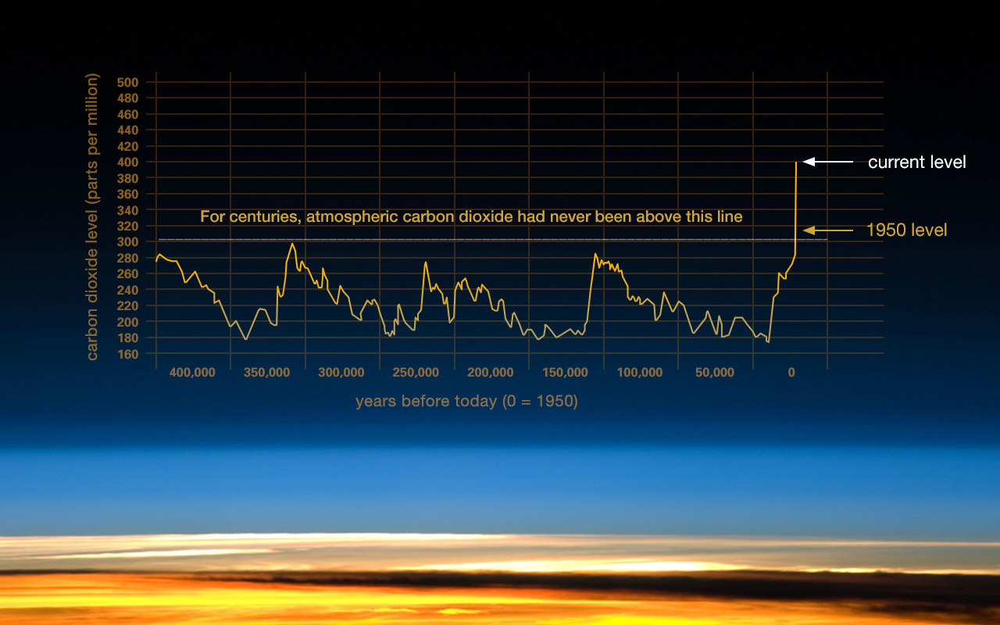
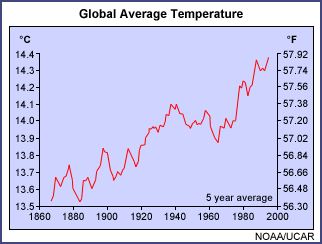
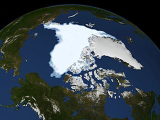

The Earth's climate has changed throughout history. Just in the last 650,000 years there have been seven cycles of glacial advance and retreat, with the abrupt end of the last ice age about 7,000 years ago marking the beginning of the modern climate era — and of human civilization. Most of these climate changes are attributed to very small variations in Earth’s orbit that change the amount of solar energy our planet receives.

The evidence for rapid climate change is compelling:
Global sea level rose about 17 centimeters (6.7 inches) in the last century. The rate in the last decade, however, is nearly double that of the last century.
Warming Oceans
The oceans have absorbed much of this increased heat, with the top 700 meters (about 2,300 feet) of ocean showing warming of 0.302 degrees Fahrenheit since 1969.

Shrinking Ice Sheets

The Greenland and Antarctic ice sheets have decreased in mass. Data from NASA's Gravity Recovery and Climate Experiment show Greenland lost 150 to 250 cubic kilometers (36 to 60 cubic miles) of ice per year between 2002 and 2006, while Antarctica lost about 152 cubic kilometers (36 cubic miles) of ice between 2002 and 2005.
Declining Arctic Sea Life
Both the extent and thickness of Arctic sea ice has declined rapidly over the last several decades
